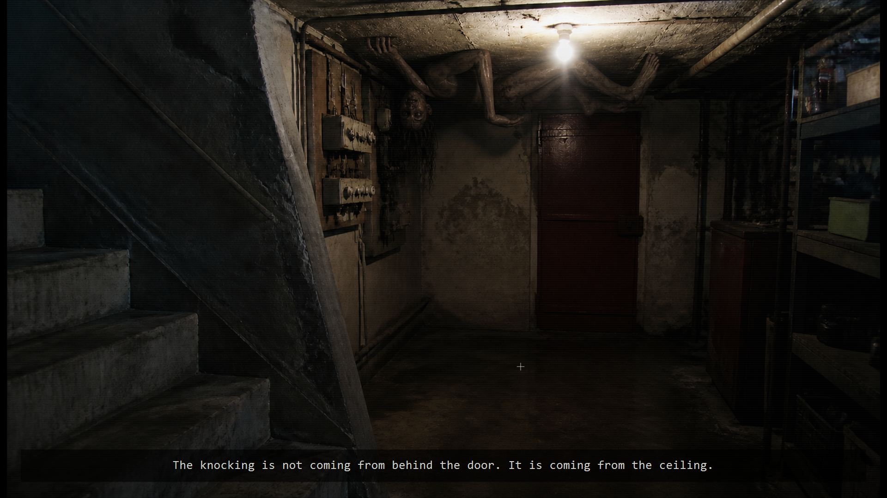

01 / 04Une archive qui ne demande qu’à être ouverte.
FRAME00.exe est un jeu d’horreur narratif autonome pour Windows. Le joueur explore des pièces inquiétantes, observe les détails, résout des énigmes et avance dans une histoire qui se révèle par fragments.
Le projet a été réalisé de bout en bout en C# avec .NET 8 et Windows Forms : scènes, états de jeu, interactions, changements d’ambiance et gestion audio sont réunis dans une expérience sans connexion internet.
C# / .NET 8Windows x64Sound design